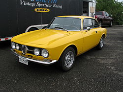

| Production | 1967–1971 |
|---|---|
| Body style | 2-door coupé |
| Engine | 1.8 L DOHC I4 |
| Wheelbase | 2,350 mm (92.5 in) |
| Length | 4,089 mm (161.0 in) |
| Width | 1,575 mm (62.0 in) |
| Height | 1,321 mm (52.0 in) |
| Curb weight | 1,038 kg (2,288 lb) |
The 1750 GTV appeared in 1967 along with the 1750 Berlina sedan and 1750 Spider. The same type of engine was used to power all three versions; this rationalisation was a first for Alfa Romeo.